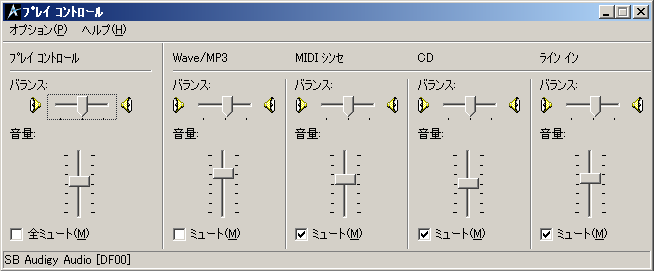

DSSF3 > RA > 操作マニュアル > 騒音計との接続
騒音計をパソコンに接続する
リアルタイムアナライザは、騒音計のAC出力を取り込んで実時間分析器として利用することができます。騒音計のAC出力は、マイクで測定した音を内部のマイクアンプで増幅した信号をそのまま出力するので、通常の測定用マイクとマイクアンプを使うのと同じことになります。その際の使用方法、注意点などを説明します。
通常騒音計はフイルターや、時定数を持っています。そのため、衝撃音や特別な周波数などの測定には使用できませんが、AC出力のようなアナログ出力は、マイクで拾った音をそのままリアルタイムアナライザに取り込むことができます。
騒音計をパソコンに接続して使用するには、
- 騒音計のAC出力をパソコンのラインインに接続します。
- 再生のボリュームコントロールを設定します。ソフトウェア出力のWAVE以外の不要なMICやLINEをミュートします。ミュートしておかないと、入力をそのまま出力してハウリングを起こします。WAVEはWindowsも出力で使用しているため、測定中はメールの着信音など、すべて音の出るソフトを止めておく必要があります。測定プログラム以外のソフトは全て終了させてください。Windows自体も音を止めて、無音の測定機にします。

DSSF3 > RA > 操作マニュアル > 騒音計との接続